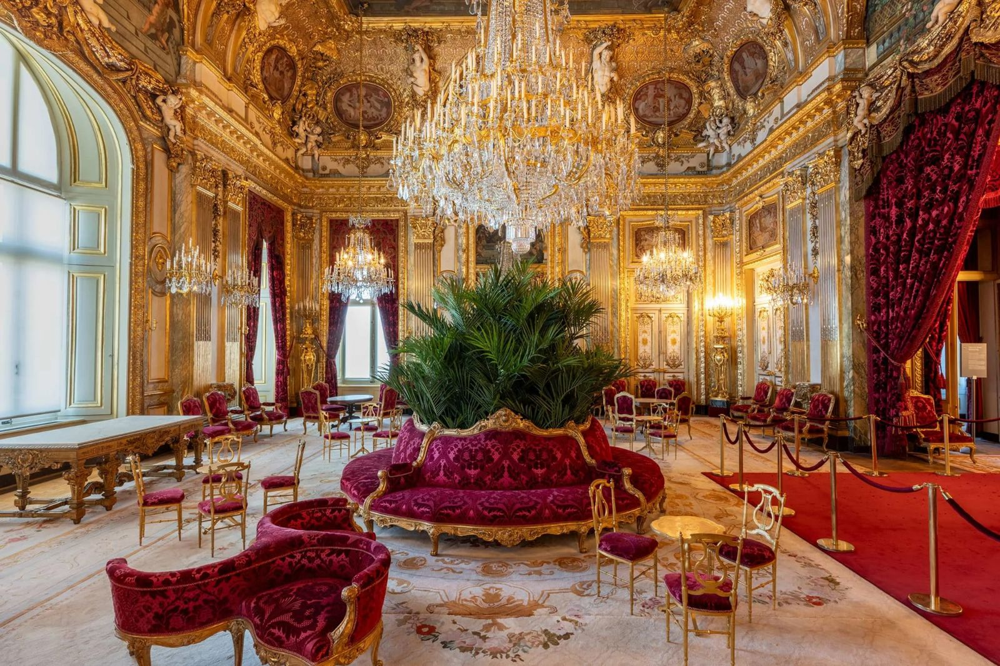

Durf te mengen
Strak mid-century naast barok goud, ruw hout tegen glanzend messing. Het mooiste interieur wrijft tijdperken tegen elkaar aan — het contrast maakt een kamer levend, nooit een museum.
Luid, zeldzaam en onbeschaamd duur. Antiek van de markt, recht naar een nieuwe generatie — klik een stuk aan voor het verhaal.

Alles wat nu binnen is — klik voor het verhaal.
Inspiratie
Antiek en vintage design is geen decor — het is karakter. Een stuk met een verleden vertelt een verhaal dat nieuw meubilair nooit kan namaken. Hier delen we waar wij van houden, zodat je interieur niet ingericht voelt, maar geleefd.
Strak mid-century naast barok goud, ruw hout tegen glanzend messing. Het mooiste interieur wrijft tijdperken tegen elkaar aan — het contrast maakt een kamer levend, nooit een museum.
Je hebt geen kamer vol antiek nodig. Eén ankerpunt — een Italiaans dressoir, een oranje fauteuil, een icoon met een naam — tilt een hele ruimte op en geeft de rest betekenis.
Een lichte slijtage, een warme patina, de hand van de maker nog zichtbaar. Dat zijn geen gebreken maar bewijs van een geleefd leven. Perfectie is voor fabrieken; karakter komt met de jaren.
Het zeldzame stuk vind je niet, het komt op je pad. Wij speuren zodat jij straks dat ene ontwerp in huis hebt dat niemand anders heeft — en het verhaal erbij om het te vertellen.
Iets gezien in de showroom dat je raakt?